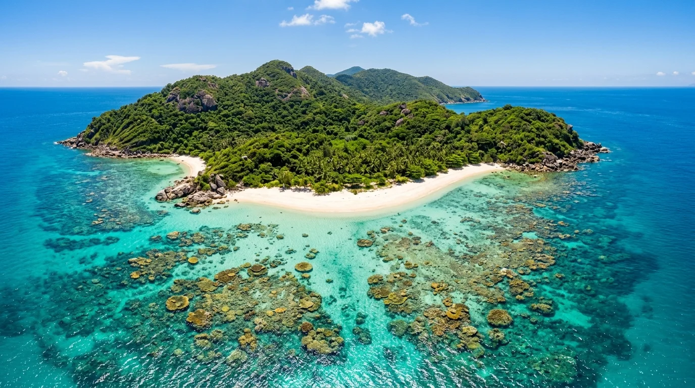
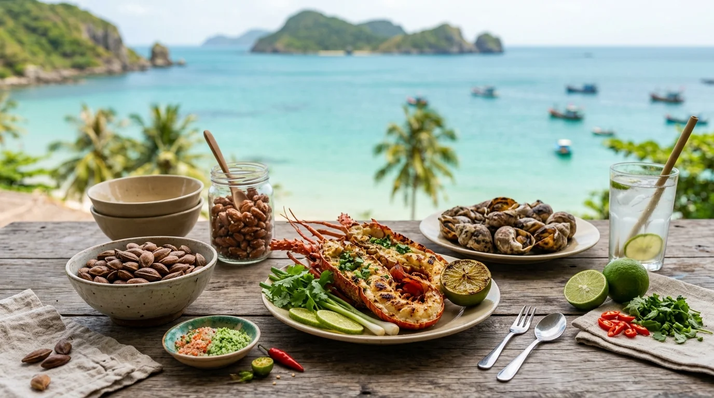

🌊 1. Quần Đảo Côn Đảo — Khu Ramsar Biển Đầu Tiên Của Việt Nam
Khác biệt hoàn toàn với những bãi biển đông đúc thương mại hóa, Côn Đảo giữ trọn cho mình vẻ đẹp nguyên sinh, thuần khiết với 16 hòn đảo lớn nhỏ được bảo tồn nghiêm ngặt. Tổng diện tích tự nhiên Vườn Quốc gia Côn Đảo gần 20.000 ha (khoảng 6.000 ha rừng nguyên sinh trên đảo và 14.000 ha phân khu bảo tồn biển), sở hữu hệ sinh thái san hô cổ xưa với hơn 300 loài, các thảm cỏ biển trù phú và là nơi sinh sống của các loài động vật biển quý hiếm như rùa biển, bò biển Dugong, cá heo và sóc đen Côn Sơn.
🌿 Vị thế sinh thái quốc tế: Ngày 18/06/2013, Ban Thư ký Công ước Ramsar quốc tế đã chính thức công nhận Vườn Quốc gia Côn Đảo là Khu Ramsar thứ 2.203 của thế giới và là Khu Ramsar biển đảo đầu tiên của Việt Nam nhờ những giá trị đa dạng sinh học độc nhất vô nhị.
📍 2. Tám Tọa Độ Sinh Thái & Thắng Cảnh Biển Ngọc
Nhấp vào từng thẻ thắng cảnh để chiêm ngưỡng ảnh nghệ thuật AI và cẩm nang khám phá thực tế:
 Bãi biển đẹp nhất Côn Đảo
Bãi biển đẹp nhất Côn Đảo
📍 Gần Sân bay Cỏ Ống, Bắc đảo
Bãi Đầm Trầu — Bãi Tắm Thiên Đường
Bãi cát vàng mịn màng uốn lượn dưới vách đá phủ bóng cây rừng nguyên sinh, điểm ngắm máy bay hạ cánh ngoạn mục nhất Việt Nam.
Chiêm ngưỡng & Xem sử tích →
 Khu Ramsar Biển Đầu Tiên VN
Khu Ramsar Biển Đầu Tiên VN
📍 Phía Đông đảo Côn Sơn
Hòn Bảy Cạnh & Bãi Cát Lớn
Vương quốc bảo tồn rùa biển lớn nhất Việt Nam, nơi lưu giữ hệ sinh thái rừng ngập mặn trên cạn và rạn san hô cổ xưa tuyệt mỹ.
Chiêm ngưỡng & Xem sử tích →
 Đỉnh Thánh Giá 577m
Đỉnh Thánh Giá 577m
📍 Đảo Côn Sơn, Côn Đảo
Vườn Quốc Gia & Đỉnh Thánh Giá
Khu bảo tồn thiên nhiên đa dạng sinh học cao với thảm rừng nhiệt đới bạt ngàn, đỉnh núi 577m mây phủ và các cung trekking xuyên rừng kỳ thú.
Chiêm ngưỡng & Xem sử tích →
 Tọa độ ngắm bình minh & hoàng hôn
Tọa độ ngắm bình minh & hoàng hôn
📍 Cung đường Đông Bắc đảo Côn Sơn
Mũi Chim Chim & Mũi Tàu Bể
Mỏm đá granite tự nhiên nhô thẳng ra lòng biển khơi, tuyệt tác thiên nhiên đón những vạt nắng bình minh và hoàng hôn tráng lệ.
Chiêm ngưỡng & Xem sử tích →
Cung đường biển ngoạn mục
📍 Tuyến ven biển Cỏ Ống – Bến Đầm
Cung Đường Ven Biển Côn Sơn
Cung đường ngoạn mục ôm trọn bờ vịnh xanh biếc, nối liền từ Sân bay Cỏ Ống qua trung tâm thị trấn đến Cảng Bến Đầm.
Chiêm ngưỡng & Xem sử tích →
 Bãi biển thủy triều kỳ thú
Bãi biển thủy triều kỳ thú
📍 Gần Cảng Bến Đầm, Tây Nam đảo
Bãi Nhát & Đỉnh Tình Yêu
Bãi biển kỳ diệu chỉ hiện lên khi triều rút, nơi ngắm trọn vẹn hoàng hôn buông sau ngọn núi Đỉnh Tình Yêu thơ mộng.
Chiêm ngưỡng & Xem sử tích →

Thiên đường lặn ngắm san hô
📍 Phía Đông Bắc đảo Côn Sơn
Hòn Cau & Rạn San Hô Cổ Xưa
Thiên đường lặn ngắm san hô trong vắt, rừng dừa xanh ngút ngàn và bãi cát trắng mịn hoang sơ biệt lập giữa đại dương.
Chiêm ngưỡng & Xem sử tích →

Đặc sản trứ danh xứ đảo
📍 Ẩm thực bản địa Côn Đảo
Hạt Bàng & Hải Sản Đại Dương
Thức quà quý từ cây bàng cổ thụ hàng trăm năm tuổi kết hợp cùng nguồn hải sản trù phú tươi sống từ ngư trường Côn Đảo.
Chiêm ngưỡng & Xem sử tích →
🐢 3. Trải Nghiệm Xem Rùa Về Đẻ Trứng & Thả Rùa Con Về Biển
Côn Đảo là bãi đẻ rùa biển lớn nhất Việt Nam, nơi bảo tồn hai loài rùa biển quý hiếm trong Sách Đỏ: Vích (Rùa xanh - Chelonia mydas) và Đồi mồi (Eretmochelys imbricata). Mùa rùa lên bờ đẻ trứng kéo dài từ tháng 4 đến tháng 9 hàng năm, cao điểm nhất là các tháng 6, 7, 8:
Quy trình tour xem rùa đẻ trứng tại Hòn Bảy Cạnh:
- 17h00: Ca nô đưa khách từ trung tâm Côn Đảo cập bến Trạm Kiểm lâm Bãi Cát Lớn Hòn Bảy Cạnh. Khách nhận phòng nghỉ và dùng bữa tối dã ngoại.
- 21h00 – 01h00: Dưới sự hướng dẫn của kiểm lâm viên Vườn Quốc gia, du khách giữ im lặng tuyệt đối, tắt đèn pin sáng chói (chỉ dùng ánh sáng đỏ dịu) để theo dõi rùa mẹ bò lên bờ cát đào tổ sâu 50 – 60cm và đẻ từ 80 đến 120 quả trứng tròn như quả bóng bàn.
- 06h00 sáng hôm sau: Tham gia trải nghiệm thả những chú rùa con mới nở trong hồ ấp về với đại dương, ngắm nhìn đàn rùa tí hon chập chững bơi giữa làn sóng biển ban mai.
✈️ 4. Lộ Trình Di Chuyển Chuẩn Từ Hà Nội
- Bay thẳng Hà Nội (HAN) → Côn Đảo (VCS): Tuyến bay thương mại phản lực cất cánh từ Nội Bài đáp thẳng xuống Cỏ Ống chỉ trong 2 giờ 15 phút.
- Nối chuyến qua TP.HCM / Cần Thơ: Bay Hà Nội → Tân Sơn Nhất / Cần Thơ (2 giờ) → Nối chuyến bay 45 phút ra Côn Đảo (Vietnam Airlines / VASCO).
- Bay vào Nam kết hợp Tàu cao tốc biển: Bay Hà Nội vào Cần Thơ hoặc TP.HCM → Đi tàu Côn Đảo Express từ Cảng Trần Đề - Sóc Trăng (2 giờ 15 phút) hoặc Vũng Tàu (3 giờ 30 phút) ngắm trọn vẻ đẹp biển khơi.
🎟️ 5. Bảng Giá Vé & Dịch Vụ Vườn Quốc Gia Niêm Yết
| Tuyến du lịch / Dịch vụ sinh thái |
Giá vé niêm yết |
Ghi chú & Nguồn quy định |
| Vé VQG Tuyến 1 – 3 (Biển đảo) |
60.000 VNĐ / người lớn |
Tuyến tham quan sinh thái biển: Hòn Bảy Cạnh, Hòn Cau, Hòn Tài (SV: 20k, HS: 10k) |
| Vé VQG Tuyến 4 – 17 (Trekking rừng) |
50.000 VNĐ / người lớn |
Tuyến xuyên rừng nguyên sinh: Đầm Tre, Ông Đụng, Ma Thiên Lãnh, Đất Thắm |
| Hướng dẫn Xem Rùa Đẻ Trứng Ban Đêm |
350.000 – 600.000 VNĐ / người |
Phí kiểm lâm viên hướng dẫn bảo tồn ban đêm tại trạm Bãi Cát Lớn (tùy quy mô đoàn) |
| Dịch vụ Thả Rùa Con Về Biển |
50.000 VNĐ / người |
Hoạt động giáo dục môi trường buổi sáng tại các bãi ấp trứng rùa Vườn Quốc gia |
| Bãi Đầm Trầu, Bãi Nhát, Mũi Chim Chim |
Miễn phí 100% |
Thắng cảnh tự nhiên mở cửa tự do cho du khách tắm biển và check-in |
🥥 6. Cẩm Nang Ẩm Thực Hạt Bàng & Hải Sản Côn Đảo
- Mứt Hạt Bàng (Rang Muối & Ngào Đường Gừng): Món đặc sản biểu tượng mang về làm quà. Hạt bàng bùi béo ngậy, rang giòn rụm với vị mặn nhẹ hoặc ngọt cay thơm mùi gừng tươi.
- Ốc Vú Nàng Nướng Mỡ Hành / Hấp Sả: Ốc biển hình nón tựa bầu ngực thiếu nữ, thịt giòn ngọt chấm muối tiêu chanh ớt hiểm tươi cay nồng.
- Cua Mặt Trăng: Loài cua hiếm sống trong các khe san hô với những đốm tròn đỏ trên mai, thịt ngọt đậm và gạch béo ngậy thơm ngon.
- Cá Thu Một Nắng Bến Đầm: Cá thu tươi phơi duy nhất một nắng giòn vàng lớp da, thớ thịt bên trong mềm ngọt tự nhiên.
🌿 QUY TẮC BẢO TỒN THIÊN NHIÊN NGHIÊM NGẶT:
• Nghiêm cấm lấy mẫu vật tự nhiên: Tuyệt đối không bẻ san hô, không nhặt vỏ ốc vỏ sò, không bắt rùa con mang về đất liền.
• Giữ gìn biển đảo không rác thải nhựa: Luôn mang theo bình nước cá nhân, không vứt túi ni lông hoặc rác thải ra bãi biển và rạn san hô.